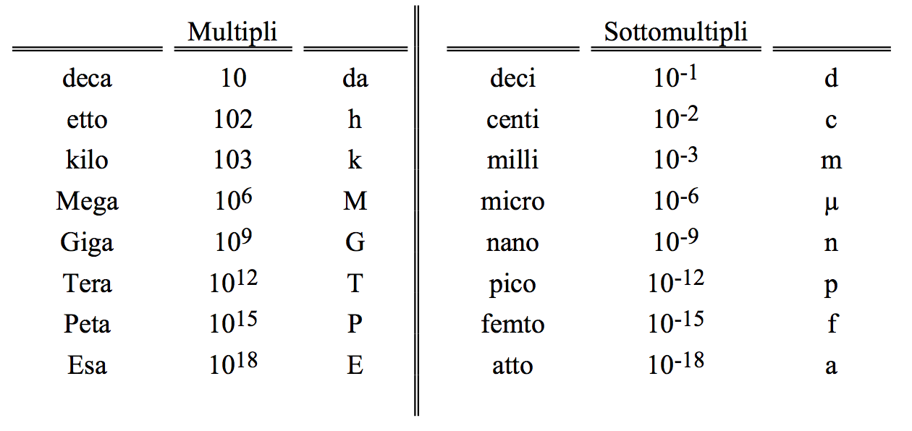

Grandezze fisiche
- Cosa sono le grandezze fisiche?
- La lunghezza
- Il tempo
- La massa
- Dimensione di una grandezza
Antonio Pierro @antonio_pierro_
Per consigli, suggerimenti, eventuali errori o altro potete scrivere una email a antonio.pierro[at]gmail.com
Cosa sono le grandezze fisiche?
- Una grandezza ha significato in fisica se:
- si può scegliere un campione (unità di misura),
- si possono stabilire dei criteri per confrontare il campione con la grandezza che si vuole misurare (metodo di misura)
Esempi di grandezze usate in Fisica
| Grandezza fisica | Simbolo |
| Lunghezza | x, y, l, s |
| Tempo | t, T |
| massa | m, M |
| velocità | v, \(\vec{v}\) |
| accelerazione | a, \(\vec{a}\) |
| Forza | F, \(\vec{F}\) |
Quali sono i criteri che guidano nella scelta dell'unitò di misura?
- In passato per la misura di lunghezza sono stati usati dei campioni derivanti da parti del corpo umano: pollice, piede, braccia.
- È facile immaginare che l'uso di campioni di questo tipo poteva andare molto bene per gli avvocati, ma era sicuramente inadeguato per lo sviluppo scientifico.
- Ricercatori che si trovano anche molto distanti tra loro devono poter confrontare i risultati di esperimenti, cioè, i risultati di misure.
Bureau international des poids et mesures
- A questo ufficio è affidato il compito di studiare problemi relativi alla scelta delle grandezze fondamentali e alla definizione dei campioni di misura.
- Tale ente organizza periodicamente una Conferenza Internazionale di Pesi e Misure in cui vengono formulate delle raccomandazioni e suggerite delle soluzioni e delle metodologie di misura.
- I vari Stati che partecipano alla conferenza possono poi adottare le proposte della conferenza emanando delle leggi.
XIV Conferenza Generale dei Pesi e Misure del 1971
| Unità fondamentali | campione | simbolo |
| Lunghezza | metro | m |
| Massa | kilogrammo | Kg |
| Tempo | Secondo | s |
| Corrente elettrica | Ampere | A |
| Temperatura | Kelvin | K |
| Quantità di Materia | Mole | mol |
Multipli e sottomultipli

Il campione della lunghezza nella storia 1/2
- Gli egiziani avevano stabilito il "cubito" che equivaleva alla distanza fra il gomito e l'estremità del dito medio.
- In modo simile il "piede" rappresentò la misurazione dopo la prima metà del Seicento ed equivaleva infatti alla lunghezza del piede reale di Luigi XIV.
- Al termine delle misurazioni del meridiano terrestre (arco che congiunge il Polo Nord terrestre con il Polo Sud), fu costruita e depositata a Parigi una sbarra di platino puro che, alla temperatura del ghiaccio fondente, presentava fra i suoi estremi una distanza pari alla 40 milionesima parte del meridiano terrestre (metro)
Il campione della lunghezza nella storia 2/2
- Ci si accorse in seguito che il meridiano terrestre era più lungo di quanto era risultato dalle prime misure.
- Per evitare di correggere il campione e quindi tutte le copie in circolazione, si preferì abbandonare ogni riferimento al meridiano terrestre e considerare come metro la lunghezza della sbarra.
- Tuttavia la sbarra presenta degli inconvenienti (imprecisione dovute alle deformazioni del campione, ecc.)
- Oggi il metro campione viene definito come la distanza percorsa dalla luce nel vuoto in un tempo pari a 1/299 792 458 s.
Il campione del tempo
- La ricerca del campione di tempo presenta delle maggiori difficoltà rispetto a quello della lunghezza, perchè non può essere materializzato.
- Nel cercare il campione del tempo, l'attenzione dell'uomo è stata attratta da quei fenomeni che si ripetono nel tempo sempre nello stesso ordine e con le stesse modalità.
- Questi fenomeni sono detti periodici ed il susseguirsi delle varie fasi a partire da una scelta arbitrariamente come iniziale, fino a ritornare in essa è detto ciclo.
- L'intervallo di tempo necessario per percorre un ciclo è detto periodo.
Il campione del tempo nella storia 1/3
- Il fenomeno periodico più familiare è la rotazione della terra intorno al proprio asse che determina la lunghezza del giorno.
- Esso fu usato fin dall'antichità come campione di tempo ed è ancora oggi alla base del campione del tempo civile.
Il campione del tempo nella storia 2/3
- Il campione di tempo, il secondo, inizialmente è stato definito come 1/86400 parte del giorno solare medio.
- Per giorno solare si intende l'intervallo di tempo che intercorre tra due passaggi successivi del sole sopra lo stesso meridiano terrestre.
- Tuttavia il tempo determinato sulla base della rotazione terrestre non è adeguato per misure di alta precisione, a causa di una lenta diminuzione della velocità di rotazione della terra.
Il campione del tempo nella storia 3/3
- Recentemente, per migliorare le misure di tempo e per disporre di un campione facilmente riproducibile, l'attenzione è stata rivolta alle proprietà degli atomi.
- Sono così stati costruiti degli orologi atomici, che sfruttano le vibrazioni periodiche di alcuni tipi di atomi o molecole.
Orologio atomico 1/2
- L'atomo di azoto può trovarsi da un lato o dall'altro rispetto al piano individuato dai 3 atomi di idrogeno.
- In realtà l'atomo di azoto oscilla tra queste due posizioni con una frequenza di circa 24 miliardi di oscillazioni al secondo.
Orologio atomico 2/2
- Anche altre sostanze hanno proprietà analoghe a quelle dell'ammoniaca.
- Nel 1967 la XIII conferenza Generale dei Pesi e Misure ha scelto come campione internazionale di tempo il secondo definito con un orologio atomico basato su una particolare vibrazione dell'atomo di Cesio 133.
- In particolare il secondo è definito come il tempo necessario perchè vengano compiuti 9.192.631.770 cicli della particolare vibrazione degli atomi di cesio.
Il campione della massa
- La massa è una proprietà dei corpi, che può essere compresa correttamente solo con lo studio della dinamica che affronteremo nelle prossime lezioni.
- Il campione internazionale di massa è un cilindro di platino-iridio conservato nel Laboratorio di Pesi e Misure di Sevres.
- La massa del campione è per definizione 1 Kg.
Dimensione di una grandezza
- La dimensione di una grandezza è legata all'esponente, o agli esponenti, a cui vanno elevate le grandezze fondamentali per ottenere la grandezza in esame.
- Indicheremo la dimensione della grandezza A con il simbolo A racchiuso tra le parentesi quadre:
\[
Dimensione\ di\ A\ = [A]
\]
- Esempi: la distanza tra due punti ha le dimensioni di una lunghezza, [L]
- La durata di un intervallo di tempo ha le dimensioni di un tempo, [T].
Grandezze derivate dalla lunghezza.
- Le grandezze derivate dalla lunghezza sono le superfici, i volumi e gli angoli.
- Le dimensioni delle superfici saranno: [S] = [\(L^2\)]
- Le dimensioni del volume saranno: [V] = [\(L^3\)]
- Le dimensioni dell’angolo: [\(\alpha\)] = [\(L^0\)]